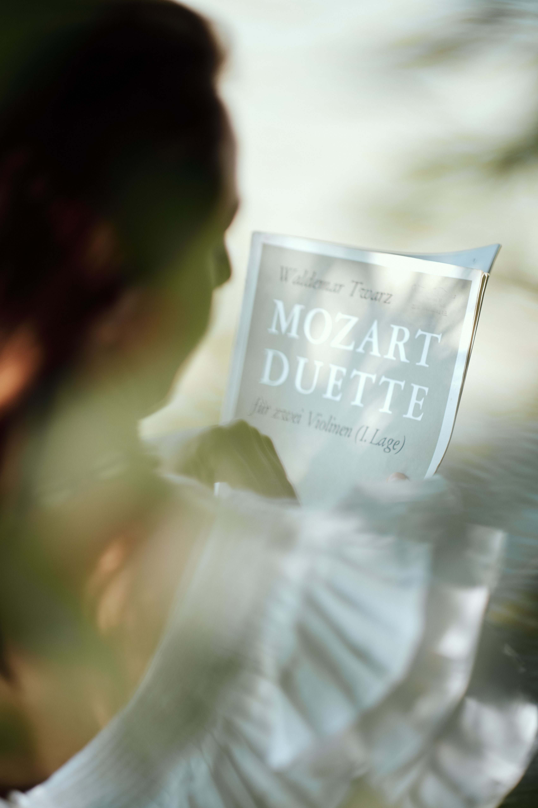

Descripción
El producto final consiste en la elaboración, diseño y maquetación de un programa de mano para un recital de piano. Además, deberá incorporar las correspondientes notas al programa de cada obra. Se elaborará a través de la herramienta online "Canva" por la gran versatilidad que ofrece, ya que permitirá realizar tanto el diseño de la cartelería para los recitales, la elaboración de los programas de mano así como el diseño de las notas al programa de una forma más innovadora y original que las tradicionales. Además, esta herramienta nos va a permitir la generación de códigos QR para poder insertar tanto distintas notas al programa al programa de mano, así como distintos programas de recital a la cartelería de los recitales.
Características del producto final
- Debe de estar elaborado con la herramienta Canva.
- Debe seguir la estructura: título del recital, lugar, fecha y hora; listado cronológico de las obras, incluyendo: Nombre del compositor, Título completo de la obra, Catálogo oficial (BWV, K, Op., etc.); Notas al Programa: textos breves (entre 150 y 300 palabras por obra o grupo de obras) que contextualicen la música para el público (enlazados a través de código QR); Biografía del Intérprete; Protocolo y créditos o agradecimientos
- Respetar los derechos de autor.
